- はじめに
- Q1. チャットで「（外部）」と表示されるのはどういう意味？
- Q2. 外部アクセスを止めるにはどうすればいい？
- Q3. 特定の組織ドメインのみを許可する状態にするには？
- Q4. 個人の Microsoft アカウント (MSA) とのやり取りを制限するには？
- Q5. MSA ユーザーのプロファイルで、ユーザーのメールアドレスが見える場合と見えない場合があるのはなぜ？
- Q6. チャットから外部ユーザーをブロックするには？
- Q7. 外部ユーザーとのチャット履歴を確認するには？
- おわりに
はじめに
こんにちは、 Unified Communications サポート チームです。
いつも Microsoft Teams をご利用いただきありがとうございます。
本記事では、Teams の 外部アクセス に関するよくあるご質問とその回答をまとめてご紹介いたします。外部アクセスの設定は、外部テナントのユーザーや個人の Microsoft アカウント（MSA）をもつユーザーとのチャットや会議の可否を制御する重要な機能です。しかし、設定項目が複数にまたがるため「どこを設定すればよいか分かりにくい」というお問い合わせを多くいただいております。
この記事では、お問い合わせの多いご質問を Q&A 形式で整理し、設定のポイントや確認すべき項目をまとめました。外部アクセスの運用設計やトラブルシューティングにお役立てください。
※ 本記事の内容は執筆時点 (2026 年 4 月現在) の情報・動作に基づくものとなります。最新の動作については公開情報の更新をご確認ください。
ℹ️ NOTE
Teams の外部アクセスの概要に関しては、以下の公開情報をご参照ください。
📖 ゲスト アクセスと外部アクセスを使用して、組織外の人々とコラボレーションする - 外部アクセス
📖 IT 管理者 - Microsoft ID を使用して外部会議を管理し、人や組織とチャットする
Q1. チャットで「（外部）」と表示されるのはどういう意味？
Teams のチャットでユーザーの表示名横に「（外部）」と表示されるのは、そのユーザーが自組織のテナントに属さない外部のユーザー（外部アクセスを通じた他テナントの組織ユーザー や MSA ユーザー）であることを示します。
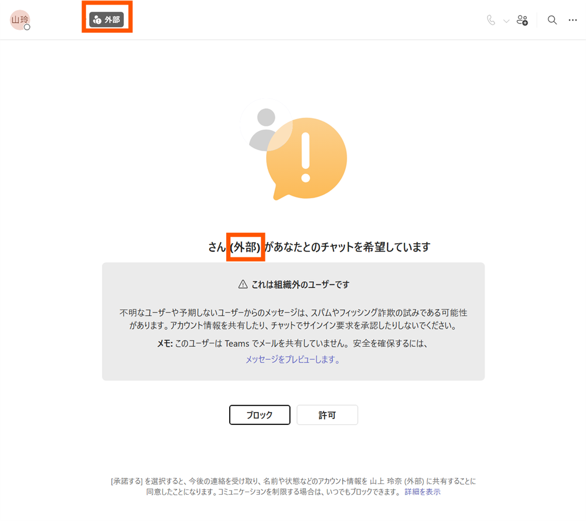
💡 TIP
また、ユーザーの信頼度インジケータに「! 外部」がついている場合も、外部のユーザーからのチャットであることを意味します。
📖 organization外のユーザーの表現 - 2. External-Unfamiliar
Q2. 外部アクセスを止めるにはどうすればいい？
Teams で外部アクセスに関する設定を管理するには、Teams 管理センター > [外部アクセス] > [組織の設定] タブにアクセスします。また、ユーザー別に個別のポリシーとして設定を行う際は、[ポリシー] タブにアクセスします。
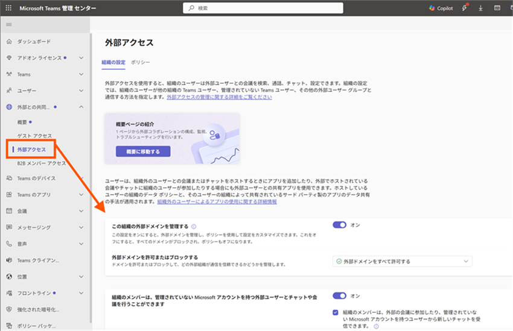
外部アクセスの設定項目のうち、[この組織の外部ドメインを管理する] と [組織のメンバーは、管理されていない Microsoft アカウントを持つ外部ユーザーとチャットや会議を行うことができます] の設定については既定値がオン のため、必要に応じて設定をご調整ください。
| 設定項目 | 対象 | 既定値 | オフにするにはどう変更するか |
|---|---|---|---|
| この組織の外部ドメインを管理する | 他の Microsoft 365 組織 (他テナント) 内ユーザーが対象 | すべての外部ドメインを許可 | [この組織の外部ドメインを管理する] のトグルをオフにする または ドロップダウンで [特定の外部ドメインのみを許可する] に変更する |
| 組織のメンバーは、管理されていない Microsoft アカウントを持つ外部ユーザーとチャットや会議を行うことができます | 個人 Microsoft アカウント (MSA) が対象 | オン | トグルをオフにする |
なお、ポリシーおよびテナントの設定変更が実際のクライアントの動作に反映されるまでに 24 時間程度要することがございます。あらかじめ、ご留意ください。
💡 TIP
ポリシー割り当てについては、以下記事でもご案内しております。こちらもあわせてご参照ください。
📖 Teams - ポリシーを割り当てる際に要する時間について
Q3. 特定の組織ドメインのみを許可する状態にするには？
Teams 管理センター > [外部アクセス] > [この組織の外部ドメインを管理する] をオンにしたうえで、[外部ドメインを許可またはブロックする] のドロップダウンの設定を変更します。
例えば、特定の組織ドメインのみを許可する状態とするには [特定の外部ドメインのみを許可する] を選択し、許可対象のドメインを指定ください。
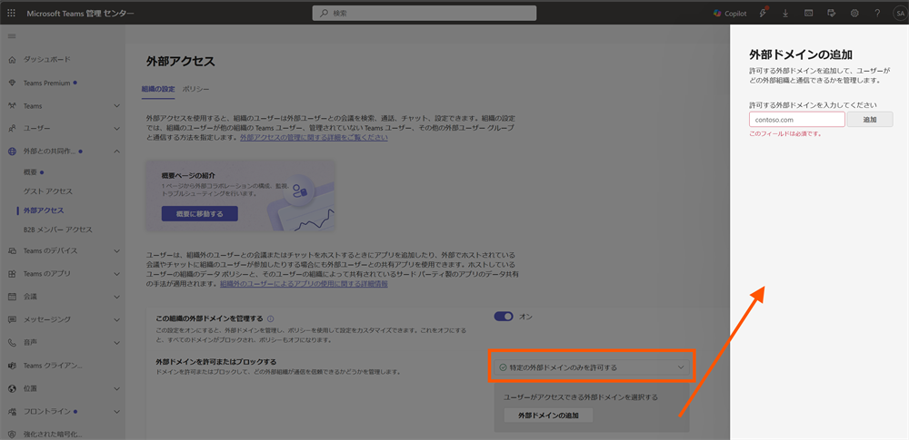
❗ IMPORTANT
個人の Microsoft アカウント（MSA） は本設定の対象外となります。MSA ユーザーとのやり取りを制御するには、次の Q4 の設定が必要です。
Q4. 個人の Microsoft アカウント (MSA) とのやり取りを制限するには？
@outlook.com, @hotmail.com 等の個人の Microsoft アカウント (MSA) をもつユーザーからのやり取りを制限するには、Teams 管理センター > [外部アクセス] で以下の設定をオフにします。
[組織のメンバーは、管理されていない Microsoft アカウントを持つ外部ユーザーとチャットや会議を行うことができます] → トグルをオフ
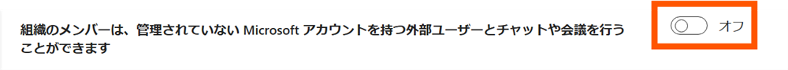
本設定をオフにすると、MSA ユーザーとのチャットのやり取りが制限されることが想定されます。
また本項目では、トグルの下に [組織のメンバーは、外部の会議に参加したり、管理されていない Microsoft アカウントを持つユーザーから新しいチャットを受信できます。] のチェックボックスの設定がございます。こちらも MSA ユーザーとのやり取りに関連する設定となり、各設定パターンに対する動作は次の通りとなります。
パターン A : トグル、チェックボックスどちらもオン (既定値)
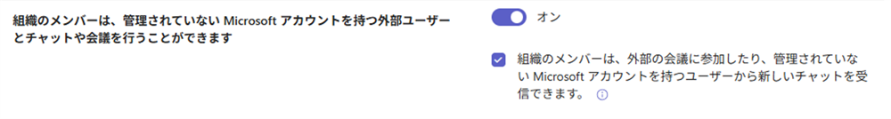
テナント内ユーザーと MSA ユーザーのチャットが許可されている状態となります。
パターン B : トグルはオン、チェックボックスはオフ
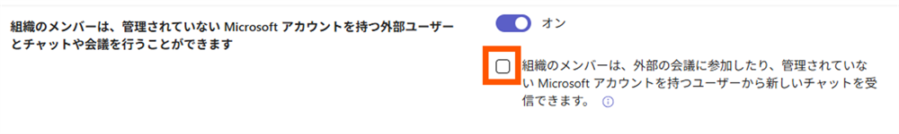
MSA ユーザーからテナント内ユーザーに対して、新しくチャットを開始することができない状態となります。
こちらの公開情報にも記載があるように、[組織のメンバーは、外部の会議に参加したり、管理されていない Microsoft アカウントを持つユーザーから新しいチャットを受信できます。] のチェックボックスをオフにすることで、MSA ユーザー側でテナント内ユーザーに対するチャットを開始することができない状態となることが想定されます。
一方で、テナント内ユーザーから MSA ユーザーに対するチャットを開始することは可能です。
パターン C : トグル、チェックボックスどちらもオフ
テナント内ユーザーと MSA ユーザー、双方にてチャットが制限されている状態となります。
Q5. MSA ユーザーのプロファイルで、ユーザーのメールアドレスが見える場合と見えない場合があるのはなぜ？
個人用 Teams では、設定 > [プライバシー] > [プロファイルの管理] で、メールアドレスをプロフィール カードに表示するかどうかを選択することができます。そのため、送信側のプライバシー設定に基づいて表示に差異が生じます。
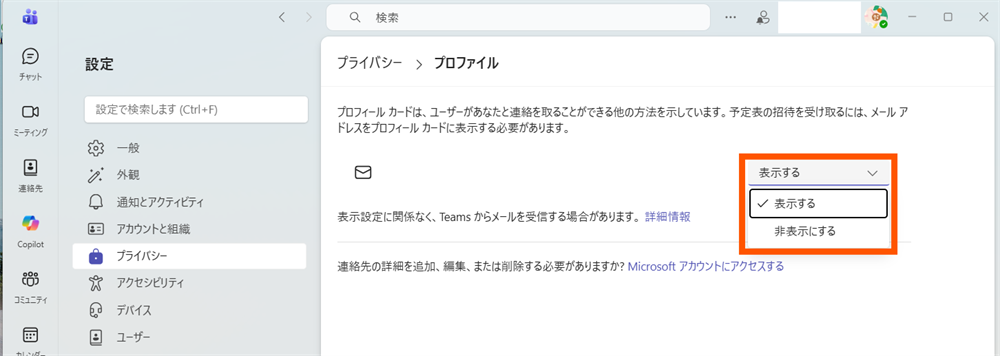
- プロフィール カードに、メールアドレスが表示される場合：送信者がプロフィールにメールアドレスを [表示する] に設定している
- プロフィール カードに、”xxx さんの連絡先詳細は Teams で非表示になっています。” と表示される場合：送信者がUPN を [非表示にする] に設定している
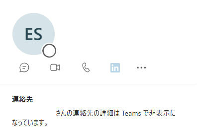
Q6. チャットから外部ユーザーをブロックするには？
外部ユーザーから届いたチャットをブロックしたい場合は、Teams クライアント上で個別にブロックすることが可能です。
- 当該ユーザーとのチャット名 右の […] > [ブロック] を選択
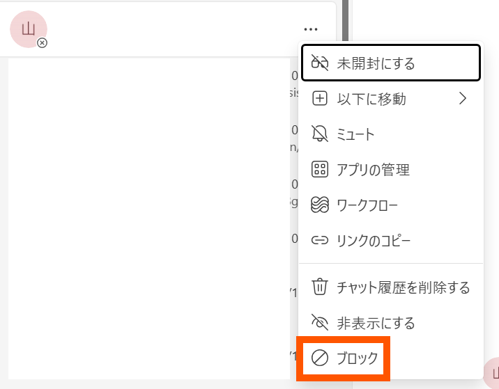
- ポップアップが表示されるため [ブロック] を選択
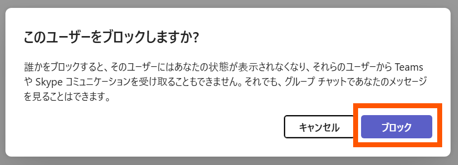
- 下図のような表示となればブロックの状態となり、当該ユーザーから追加でのメッセージ受信はされなくなります
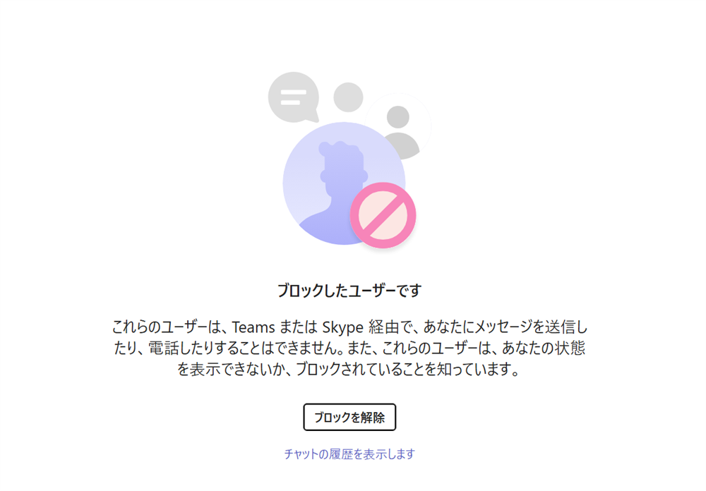
Q7. 外部ユーザーとのチャット履歴を確認するには？
Microsoft Purview ポータルの監査ログを用いることで、チャット履歴の情報がご参照いただけます。
例えば、テナント内ユーザーから MSA ユーザー との 1 :1 チャットで送られたメッセージの送信履歴は以下のように記録されます。
1 | // 監査ログの出力例 |
なお、上記は 1 例となりますので、Teams の監査ログに関して、ご不明な点やご確認されたいシナリオなどございましたら、ご遠慮なくお問い合わせください。
おわりに
本記事では、Teams の外部アクセスに関するよくあるご質問と回答をご紹介いたしました。
お問い合わせ起票時のポイント
本記事でもご案内した通り、外部アクセスに関する設定は複数の箇所にまたがっており、お問い合わせの内容によって確認すべき設定が異なってまいります。
そのため、外部アクセスに関するお問い合わせをいただく際には、以下のポイントとあわせてご起票をいただけますと、よりスムーズな調査につながります。
- (お困りのご状況があれば) 発生している事象の詳細。またご状況がわかるスクリーンショット
- (現状より設定を変更されたい場合) 変更後、どのような状態としたいかのゴール
例) 特定の組織ドメインのみ許可した状態としたい、外部アクセス設定はすべてオフとしたい など - 現在の Teams 管理センター > [外部アクセス] の設定状況がわかるスクリーンショット
💡 TIP
Teams のお問い合わせに関する網羅的なポイントは、以下記事でもご案内しております。ぜひ合わせてご参照ください。
📖 Teams - Teams のお問い合わせで、解決を早めるための情報整理のポイント
(文責 : 山上)
NOTE:
- 2026 年 4 月 20 日に、初版を公開しました。
※本情報の内容（添付文書、リンク先などを含む）は、作成日時点でのものであり、予告なく変更される場合があります。